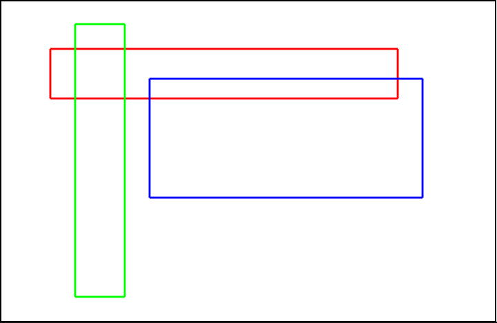

Implements a shallow embedding of Datalog as a DSL in Lean, translating backward-chaining queries into theorems with tactic-based proofs.
Abstract
Datalog is a lightweight logic programming language, based on the logic of Horn clauses. Lean, on the other hand, is a proof assistant system and language based on the Calculus of Inductive Constructions (CIC). Datalog is more constrained and less expressive than Lean but has a long history of established deduction algorithms. Writing definitions and queries in the Datalog fragment of Lean would be more succinct and understandable than writing them in Lean itself. This paper outlines the design and implementation of a shallow embedding of Datalog as a Domain Specific Language (DSL) on top of Lean. Bidirectional interoperability between the Datalog DSL and Lean is a primary goal of this design. In addition to rules and facts, backward chaining queries are automatically translated into theorems with tactic-based proofs. The paper also includes three simple examples of how the DSL can be used.
Problem
Datalog is a lightweight logic programming language for deduction, but writing definitions and queries in the Datalog fragment directly in Lean is verbose and less readable than native Datalog syntax.
Approach
The paper designs and implements a shallow embedding of Datalog as a Domain Specific Language (DSL) on top of Lean, leveraging Lean metaprogramming facilities (syntax extensions, user-defined elaborators, tactic-based proofs). The DSL supports bidirectional interoperability: Datalog rules can use Lean terms, and Lean proofs can reference Datalog-derived facts.

Figure 6. The three rectangles used in the overlapping rectangles example, with coordinates rect 1 : (50, 50, 400, 100) , rect 2 : (75, 25, 125, 300) , and rect 3 : (150, 80, 425, 200) .
Results
The DSL is demonstrated on three examples: graph reachability, overlapping rectangle detection, and symbolic differentiation. Datalog programs embedded in Lean produce propositions that can be used directly in Lean proofs, enabling formal verification of Datalog-derived conclusions.